Romeo and Juliet
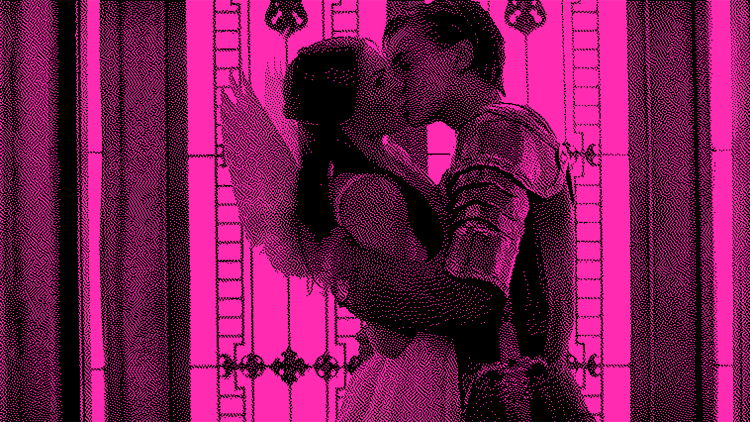
Romeo + Juliet (1996) • It's Me or Them 💔
Inspired by Romeo + Juliet (1996), adapted from William Shakespeare’s Romeo and Juliet (c. 1595). Two families at war. Two lovers sneaking around. Because the original story is so tragic, and gossip is supposed to be fun, this version shifts focus to the messy cousin. Instead of Mercutio spiraling into violence, he becomes more of a foil to Romeo and, in our gossip story, one of Juliet’s only allies in the chaos. The story also famously inspired West Side Story (1961; 2021). Watching the 1996 film now, gangs in Los Angeles speaking in iambic pentameter almost feels like a comedy, but the characters do not even know it.
What the Data Says
Across 27 responses, this story lands as moderately serious but not especially entertaining. Because Romeo and Juliet is so deeply embedded in cultural memory, it does not read as particularly juicy. “Star-crossed lovers” has become a bit of a cliché.
27 respondents, data polled from Indiana University Bloomington students, 2026.
Chaos Score: Low
The responses stay pretty tight, so everyone is more or less reading this the same way.
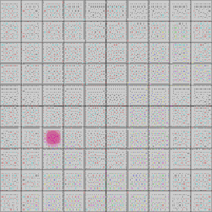
Cinderella
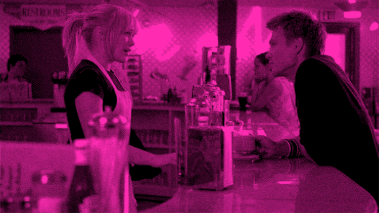
A Cinderella Story (2004) • Too Much 😩
Inspired by A Cinderella Story (2004), adapted from the Cinderella folktale tradition, Charles Perrault (1697) and Brothers Grimm (1812). One girl is overworked, overlooked, and somehow still expected to keep the whole household running. This story has been endlessly adapted, including Ever After (1998) and Another Cinderella Story (2008), with a loose thematic cousin in Pretty Woman (1990). The 2004 version stands out for bringing the story into early internet culture, centering a mystery romance built through anonymous AIM chats and introducing a generation to Jennifer Coolidge. In our gossip story, this version leans into the family dynamics to heighten the tension and brings in the family business of it all.
What the Data Says
With 27 responses, the averages fall near the middle, but the wide range suggests an unstable reading. Some interpret the story as a labor issue, while others read it as more traditional family drama.
27 respondents, data polled from Indiana University Bloomington students, 2026.
Chaos Score: Mid
A bit of a mix. There are a few different readings, but nothing too extreme.
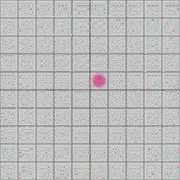
Emma
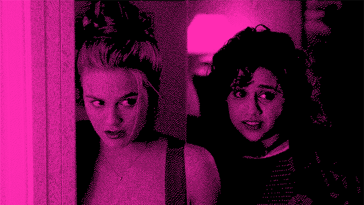
Clueless (1995) • Messy Emmy 👭
Inspired by Clueless (1995), adapted from Jane Austen’s Emma (1815). A self-appointed matchmaker meddles constantly, pairing people up and acting shocked when things get messy. Despite the slightly questionable step-sibling dynamic, the outfits, lingo, and overall tone made Clueless a perfect fit for this project. Around the same time, Emma (1996) offered a more traditional adaptation, but Clueless ultimately had a much larger cultural impact. In our gossip story, the version pulls heavily from that visual and cultural language, with subtle nods throughout. At its core, it is a classic messy story. Emma, or Cher, means well, and while she is not malicious, she is a bit clueless.
What the Data Says
Across 27 responses, this story reads as low-stakes and not especially serious. It is messy, but not that deep, more social awkwardness than real consequence.
27 respondents, data polled from Indiana University Bloomington students, 2026.
Chaos Score: Low
Pretty consistent across the board. Everyone seems to agree on the vibe.
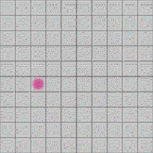
Twelfth Night
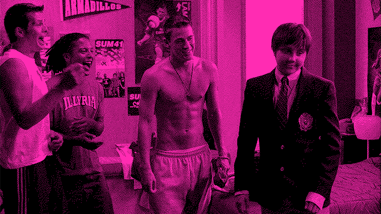
She's the Man (2006) • It Took a Haircut 🎭
Inspired by She's the Man (2006), adapted from William Shakespeare’s Twelfth Night (c. 1601). With so many characters and layers of mistaken identity, this story is tricky to boil down into a quick IM chat. In our gossip story, the focus shifts to the core confusion between Viola and Sebastian. In the film, Viola disguises herself as her brother to join a soccer team, leading to a cascade of misunderstandings. Here, soccer becomes theater, and the love triangles are simplified to keep things clear. Amanda Bynes, Channing Tatum, and a very dramatic haircut carry this into cult-classic territory.
What the Data Says
This story sits a bit higher on the entertainment scale but remains relatively low-stakes. It has some juice, identity swaps and hair chops always do, but overall reads as unserious. Responses were fairly consistent, sitting in unserious territory.
27 respondents, data polled from Indiana University Bloomington students, 2026.
Chaos Score: Mid
There is some variation, but it mostly stays within a similar range. Not too chaotic, not too clear.
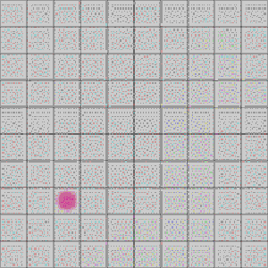
The Taming of the Shrew
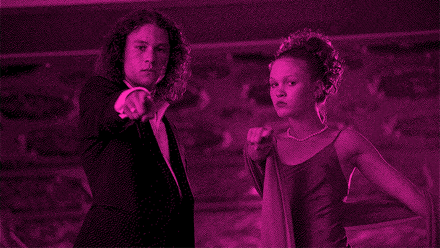
10 Things I Hate About You (1999) • Got His Bag 💰
Inspired by 10 Things I Hate About You (1999), adapted from William Shakespeare’s The Taming of the Shrew (c. 1592). A guy gets paid to date someone’s sister, catches feelings, and somehow thinks that makes the whole situation okay. Set in Seattle, the film balances humor and emotional stakes, with iconic moments like Heath Ledger’s musical number and the Letters to Cleo rooftop scene. In our gossip story, this version leans into the transactional setup while keeping the tone playful and, of course, chaotic.
What the Data Says
Across 27 responses, this story trends higher in both juiciness and seriousness. However, the wide range shows disagreement. Some read it as genuinely harmful, while others treat it as exaggerated rom-com drama. Is it manipulation, or just someone getting their bag?
27 respondents, data polled from Indiana University Bloomington students, 2026.
Chaos Score: High
A wide spread here, which means people are split. Some see one thing, some see something totally different.

Pride and Prejudice
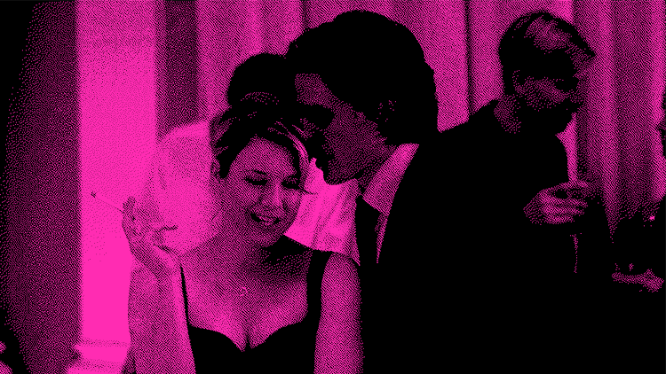
Bridget Jones's Diary (2001) • Charmer or Creeper 🪖
Inspired by Bridget Jones's Diary (2001), based on Helen Fielding’s novel (1996), which draws from Jane Austen’s Pride and Prejudice (1813). A charming ex has a reputation, a rival has a warning, and suddenly everyone has to decide who they believe. While Bridget is older than the typical coming-of-age protagonist, the story still centers on figuring yourself out. The late 1990s and early 2000s were basically the Pride and Prejudice era, with the BBC miniseries (1995) and the Keira Knightley film (2005). At the core is a miscommunication trope about someone’s bad behavior, and we are never quite sure who to trust. Also, yes, Colin Firth playing Mr. Darcy twice is still wild.
What the Data Says
This is one of the most serious and juicy stories overall. However, the wide range suggests strong disagreement, likely tied to the question of trust. Some responses pull the average down, showing that not everyone reads it as equally high-stakes.
27 respondents, data polled from Indiana University Bloomington students, 2026.
Chaos Score: High
This one gets messy. The spread shows people are not on the same page, especially when it comes to who to trust.
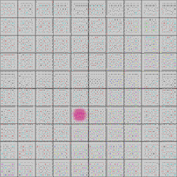
Pygmalion
She's All That (1999) • Speak Up 🤢
Inspired by She's All That (1999), loosely adapted from George Bernard Shaw’s Pygmalion (1913). A bet to makeover the “loseriest” girl in school turns into something more complicated. The film transforms a quirky outsider into prom queen with the classic makeover of taking off the glasses, while the original play centers on a professor reshaping a woman’s speech and social standing. In our gossip story, this version blends both, leaning into the power dynamics behind the transformation. There are also echoes of Legally Blonde (2001), which similarly plays with control, perception, and who gets to define success.
What the Data Says
High juiciness and high seriousness. This story hits because it exposes the darker side of transformation narratives, control, embarrassment, and being turned into someone else’s project. It is also highly polarizing, with responses split between empowerment and manipulation.
27 respondents, data polled from Indiana University Bloomington students, 2026.
Chaos Score: High
This one is all over the place. People really disagree on what is going on here.

Buzz Battleship reimagines seven classic narratives as modern gossip, turning them into an interactive game.
Players rate each story along two axes: how juicy the gossip feels, and how serious it actually is. These judgments determine where each story lands on the grid. The "correct" placements are based on survey responses from anonymous readers.
Each story originates from canonical works by authors like Shakespeare, Austen, and Shaw. These are often first encountered in English classrooms, but many people are more familiar with their later reinterpretations as coming-of-age films from the late 1990s and early 2000s.
These stories were selected for two reasons. First, fiction functions similarly to gossip on a cultural level. Both are ways of sharing, interpreting, and rehearsing social information. Second, these stories have already been retold in ways that feel familiar and accessible, which makes them easy to read as gossip in a contemporary context.
Buzz Battleship invites players to engage with gossip rather than dismiss it. The game treats gossip as something interpretive, social, and a little bit fun. While gossip is often framed as negative, this project asks a simpler question: what happens when we take it seriously as a way of reading people, situations, and relationships?